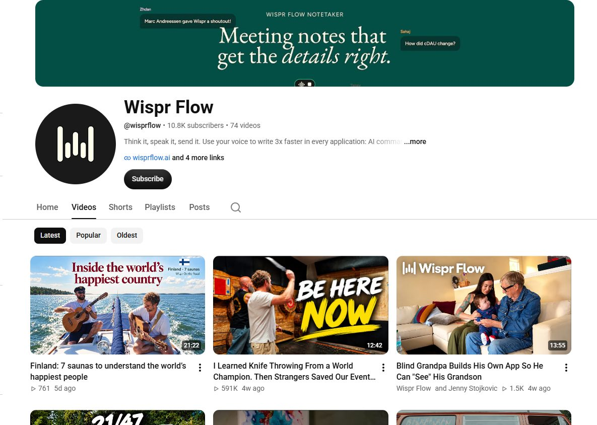
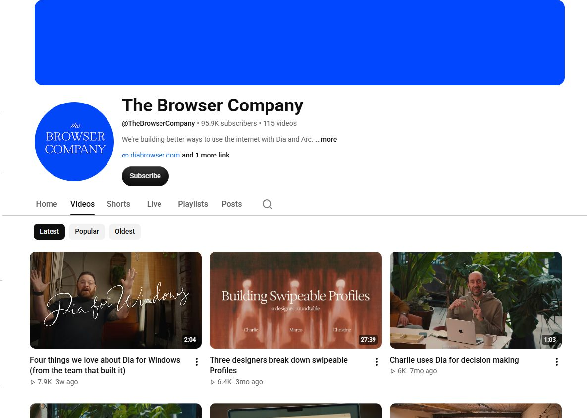
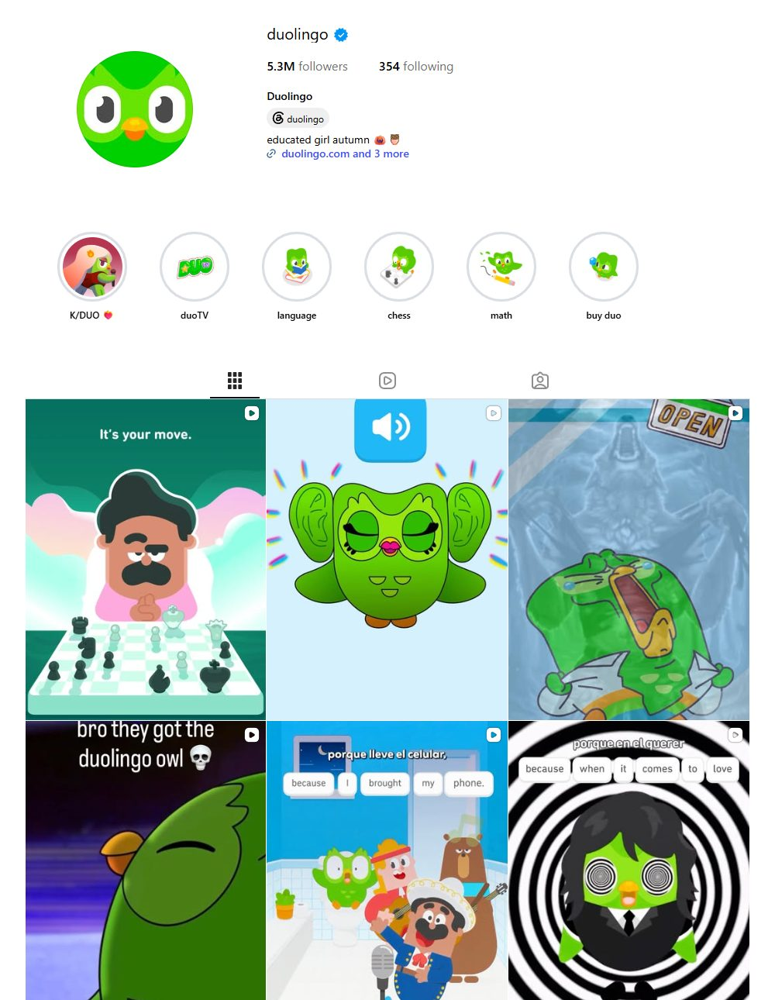
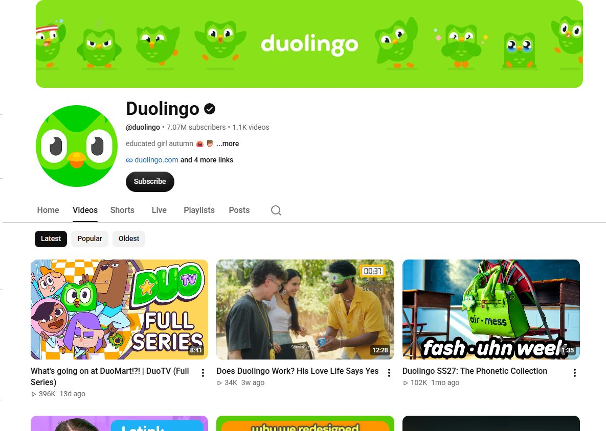
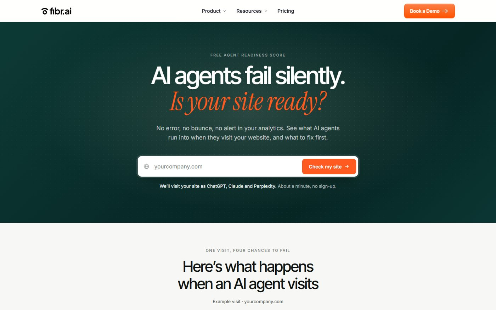

> TURN A NEW CATEGORY INTO STORIES
/ People follow people. /
Why this matters first. Nobody searches for a category that doesn't have a name yet. People only start caring when someone they trust explains it in a way they can picture. Right now, that person is you.
Look at your own LinkedIn. Your personal stories travel far: the kid who saw Times Square on TV got 133 reactions, the new office got 225. Your data posts, which are just as smart, get 11 to 14. And Fibr's AXO launch, reposted on your profile, got 3 and 9.
People follow people, and they remember stories, not features. So I'd build Fibr's story around you, in one of three ways, depending on what feels right to you.
Founder-led branding
You become the voice of the agentic web. This is how some of the fastest-growing AI companies are building their categories right now.
For Fibr: three posts a week from you. One personal story, one sharp idea about how AI agents are changing the web, one real Fibr moment. Every post carries a small Fibr signature, the way Wispr does it, so the company grows with you.
A documentary
If you'd rather not be on camera all the time, let the camera follow the work instead.
For Fibr: we'd film what's already happening. The billboard going up, the Wall Street moment, a customer seeing their agent score for the first time, the team moving into the new office. Every week, that footage becomes clips, each with a different hook:
- We put our name on a billboard in Times Square. Here's why it wasn't for humans.
- We watched ChatGPT visit a bank's website. It couldn't find the pricing.
- This is what 50x growth looks like from the inside.


A character
When an idea is new, a character makes it easy to remember. Duolingo built a brand around Duo the owl: 5M followers on Instagram, 7M subscribers on YouTube. People follow Duo, not the app.
For Fibr, the character could be the Agent: a small orange robot, the same one already in Fibr's own icons, who visits websites on behalf of people and reacts to what it finds.
- I came for the pricing. It was hiding behind a button I can't click.
- This site was so clear, I booked the demo myself.
It would own Fibr's Shorts and reels, and explain AXO without a single technical word.


The series I'd run alongside.
Whichever way we choose, a few recurring series give people a reason to come back every week.
Human vs Agent
The same website, side by side: what a person sees, and what an AI agent actually reads. Fibr's own AXO page already does this beautifully. As a 15-second reel, it explains the whole category.
Agent Readiness Check
We run a well-known brand through Fibr's free Agent Readiness Score, on screen. "ChatGPT got turned away at the door." "Claude read 36% of the homepage." Curious and kind, never mocking.

Ask the Agent
We ask ChatGPT "Which one should I buy?" in a category, live, and show who it picks and why. It makes "mentioned isn't the same as recommended" obvious in seconds.
The Agentic Web, in their words
Short interviews with marketers, founders and customers about how buying is changing, like ACT Fibernet's CMO talking about the results he's seen. Real people make a new category feel real.